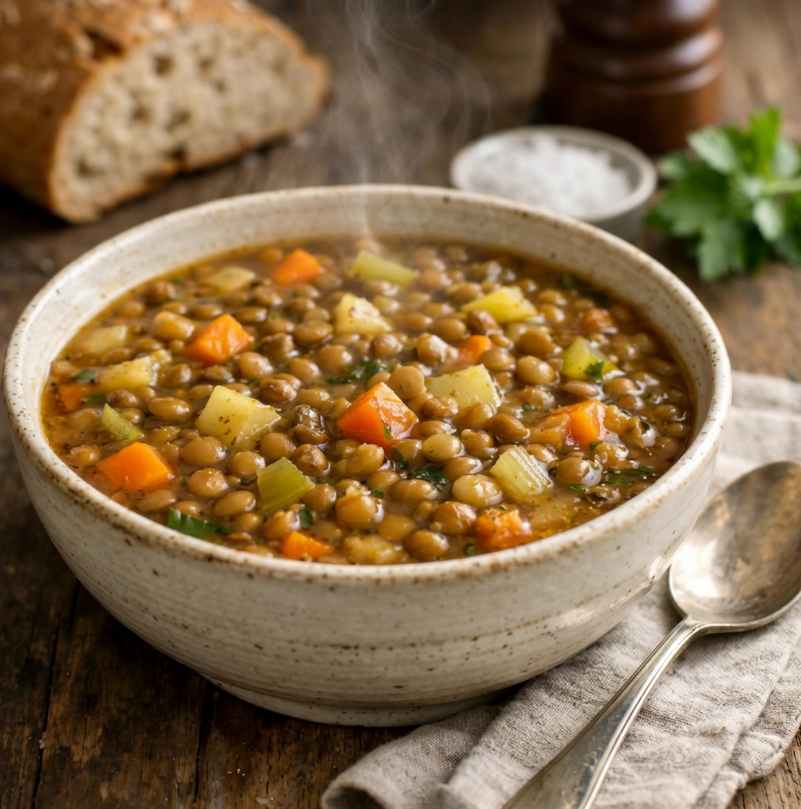
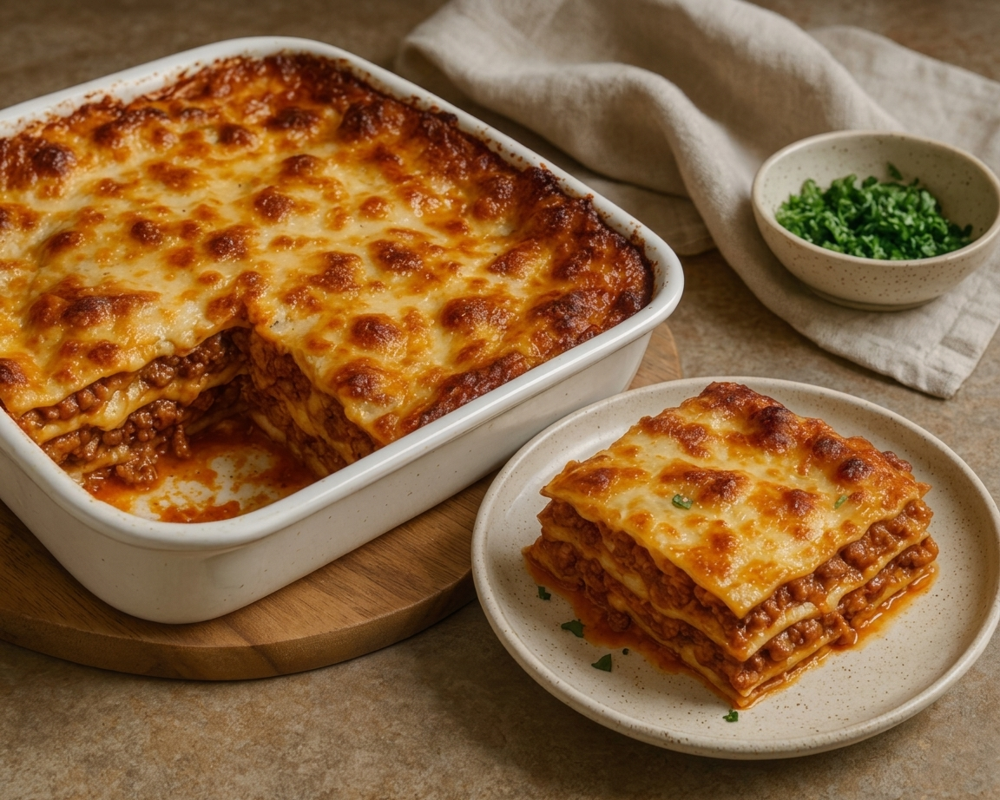

כל המתכונים שלנו
ברוכים הבאים לאוסף המתכונים שלנו! כאן תוכלו למצוא מגוון מתכונים טעימים, פשוטים ומלאי השראה.
המתכונים שלנו




פנקייקים ביתיים, רכים ואווריריים בצבע זהוב, מוגשים עם סירופ מייפל ופירות טריים.
מתכון נוסף מתוך אוסף המתכונים שלנו.
30 דקות | 4 מנות למתכון המלא